Setting up a Battery Energy Storage System (BESS) manufacturing plant is a complex, multi-phase undertaking requiring careful coordination of planning, regulatory compliance, infrastructure development, and equipment integration. The entire process typically spans 18 to 24 months from initial planning to commercial operation, though this timeline can vary significantly depending on plant scale, location, technology complexity, and regulatory environment.
Overview of the Setup Timeline
The 18 to 24-month establishment window represents an aggressive yet achievable timeline for facility operators who prioritize parallel execution of tasks and early regulatory engagement. Companies like GoodEnough Energy in India's Jammu and Kashmir facility and various international manufacturers have successfully compressed timelines through strategic planning and simultaneous execution of phases. However, the speed of implementation depends heavily on pre-planning efficiency, supply chain readiness, and unobstructed regulatory pathways.
Phase 1: Planning & Site Selection (3-6 Months)
The foundation of a successful BESS manufacturing facility begins with meticulous site selection and strategic planning. This phase typically spans 3 to 6 months and involves multiple critical activities.
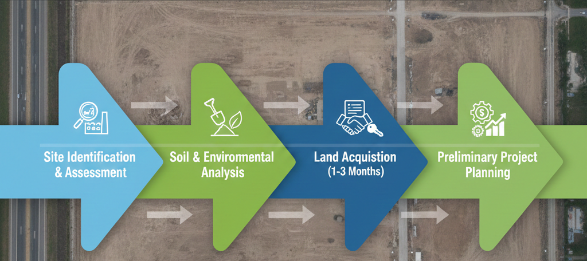
- Site Identification and Assessment: The first step requires identifying locations with suitable industrial zoning, adequate land area, and proximity to essential infrastructure. For battery pack assembly operations, the minimum land requirement is approximately 20,000–40,000 square feet, while cell manufacturing facilities demand 2–5 acres or more. The site must have reliable access to major transportation corridors for material delivery, adequate utilities including stable power supply, and proximity to grid connection points.
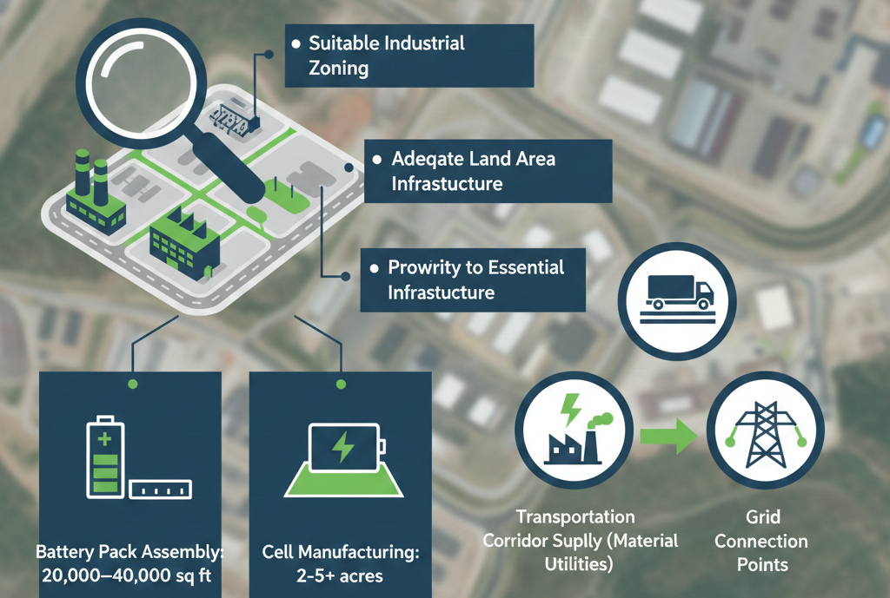
- Soil and Environmental Analysis: Sites must undergo geotechnical evaluation to ensure soil conditions can support the weight of manufacturing equipment and infrastructure. Environmental sensitivity assessments are equally critical—the location must not be in flood-prone areas, earthquake zones, or environmentally protected regions such as wetlands or endangered species habitats.
- Land Acquisition: Once a suitable site is identified and assessed, securing the land through purchase or long-term lease agreements is finalized. This negotiation and documentation process typically requires 1–3 months.
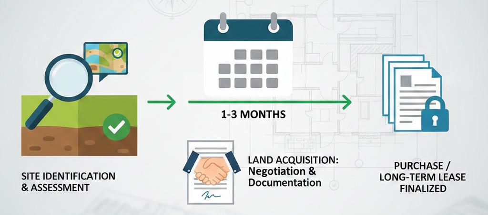
- Preliminary Project Planning: During this phase, companies conduct financial modeling, develop phased manufacturing plans, and establish technical specifications for the facility. This groundwork ensures all subsequent phases align with business objectives and operational requirements.
Phase 2: Regulatory Approvals and Licensing (4-8 Months)
Regulatory compliance represents one of the most time-sensitive aspects of plant setup, with multiple overlapping approvals required in most jurisdictions, particularly in India. This phase typically requires 4 to 8 months, though efficient parallel processing can reduce this timeline.
- Environmental Clearance (EC): For facilities with significant environmental impact, Environmental Clearance under the Environmental Impact Assessment Notification, 2006, is mandatory. Recent government reforms have streamlined processes by integrating Environmental Clearance with Consent to Establish (CTE), reducing bureaucratic duplication and approval timelines.
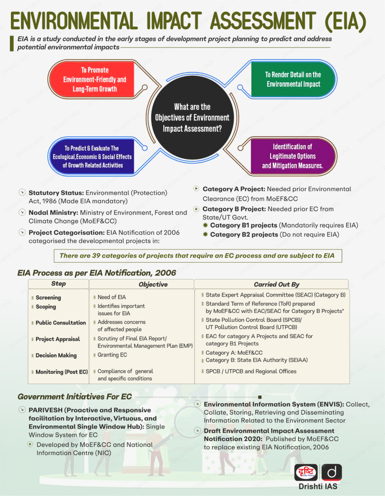
- Pollution Control Registrations: Battery manufacturers must register with the Central Pollution Control Board (CPCB) and obtain Consent to Establish (CTE) and Consent to Operate (CTO) from the respective State Pollution Control Board. These consents verify that the facility meets air and water pollution standards.
- Factory License and Fire Safety Approval: Under the Factories Act, manufacturers must obtain a Factory License from the Department of Factories and Boilers after site inspection. Concurrent with this, fire safety approvals must be secured from local fire authorities, ensuring the facility meets all fire suppression and emergency evacuation requirements.
- Bureau of Indian Standards (BIS) Certification Preparation: While full BIS certification occurs post-commissioning, manufacturers should begin preparatory documentation including detailed layout plans, manufacturing process descriptions, machinery specifications, and preliminary sample testing reports during this phase.
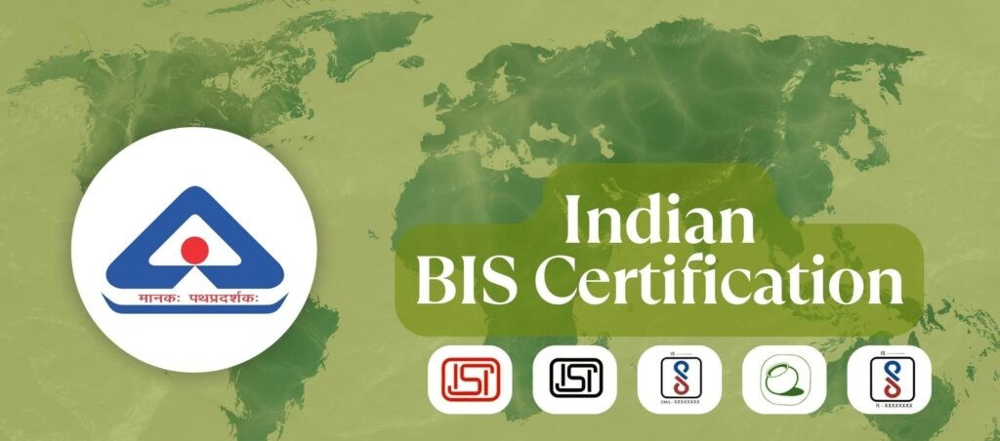
- Extended Producer Responsibility (EPR) Registration: Battery manufacturers must register on the CPCB's centralized online Battery EPR portal and submit required documentation to fulfill Extended Producer Responsibility obligations under the Battery Waste Management Rules, 2022.
- GST Registration and Business Licensing: Concurrent business registrations including GST registration, company incorporation, and industry department certifications are completed during this window.
Phase 3: Infrastructure and Civil Construction (6-12 Months)
With regulatory approvals in hand, construction of the physical plant infrastructure begins. This phase typically spans 6 to 12 months and involves substantial capital investment and resource coordination.
- Foundation and Civil Works: Construction begins with foundation preparation, including soil compaction, concrete pouring for footings, and bricklaying for structural bases. Large-scale facilities may employ steel structures as alternatives to concrete foundations, offering advantages in quick installation and future disassembly.
- Building Construction: The main manufacturing hall, office facilities, storage areas, and auxiliary structures are erected according to approved architectural designs. Climate control provisions, including HVAC systems for dry room operations and controlled temperature environments, are installed simultaneously with structural work.
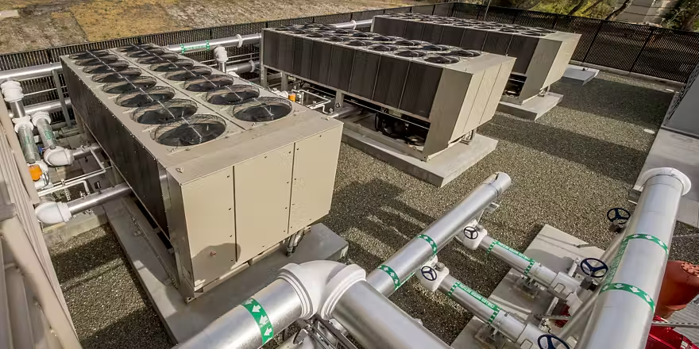
- Utility Infrastructure: Critical utilities are established during this phase, including water supply systems, wastewater treatment facilities, power distribution networks, and telecommunications infrastructure. Battery manufacturing facilities require substantial and stable power supply; poor utility infrastructure can significantly delay subsequent phases.
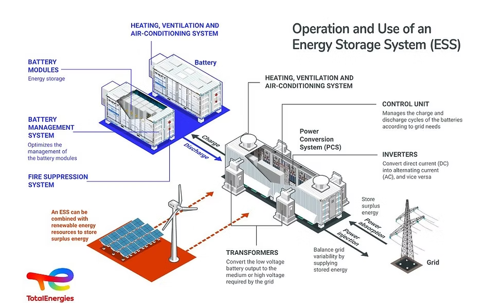
- Fire Safety Systems: Installation of fire suppression systems, emergency evacuation routes, emergency lighting, and gas evacuation systems integrated into the building design ensures compliance with fire safety regulations.
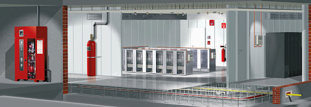
- Environmental Controls: Dust collection systems, emission control equipment, and ventilation systems meeting pollution control standards are installed to ensure the facility meets air and water quality requirements before operations commence.
Phase 4: Equipment Installation and Setup (2-4 Months)
Following infrastructure completion, manufacturing equipment is delivered, installed, and configured. This phase typically requires 2 to 4 months of coordinated effort.
- Equipment Procurement and Delivery: Battery assembly machinery, battery management system (BMS) testing equipment, soldering and welding machines, encapsulation and sealing equipment, and power control systems for testing are delivered according to project schedule. International supply chains may introduce delays; early coordination with equipment suppliers is essential.
- Equipment Installation: Specialized technicians install all machinery according to manufacturer specifications. This includes setting up production lines with precise alignment, securing equipment to foundations, and establishing inter-equipment connections.
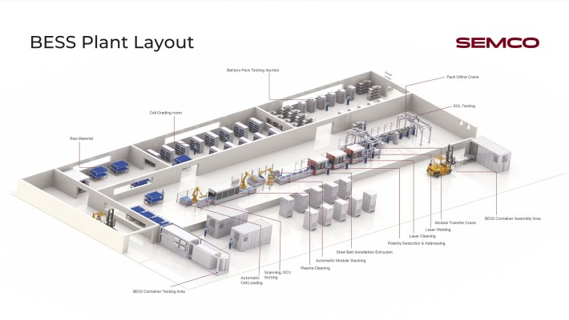
- Electrical and Control System Integration: Electrical wiring, power distribution panels, programmable logic controllers (PLCs), and supervisory control and data acquisition (SCADA) systems are installed and configured. Digital work instructions and automated quality management systems are established during this phase.
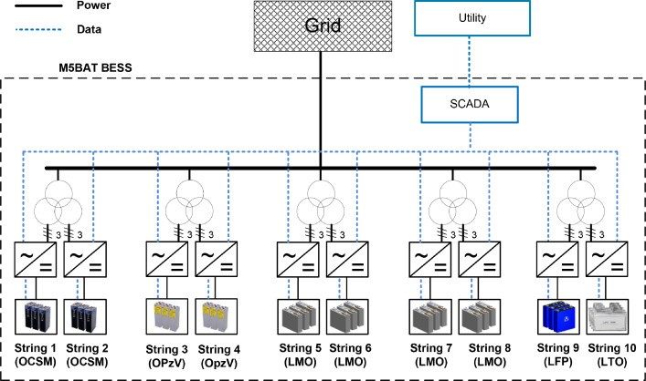
- Utility Connections: Final connections of water, wastewater, power, and telecommunications systems to individual equipment are completed and tested.
- Workforce Training Preparation: Training programs for equipment operation, safety protocols, and quality procedures begin during this phase, with digital training tools and virtual reality simulations helping accelerate workforce readiness before equipment startup.
Phase 5: Commissioning and Testing (2-3 Months)
Commissioning represents the critical transition from completed infrastructure to operational production. This phase typically spans 2 to 3 months and involves multiple sequential testing steps.
- Pre-Commissioning Preparations: Before energization, comprehensive site readiness assessments verify mechanical completion, electrical integrity, and integration of all systems. Red-line drawings confirm as-installed conditions versus design specifications.
- Cold Commissioning: Prior to power activation, all equipment undergoes thorough inspection and non-energized testing. BMS control boards and inverter systems are tested in simulation environments to verify proper functionality and interoperability. This step eliminates potential issues before live system startup.
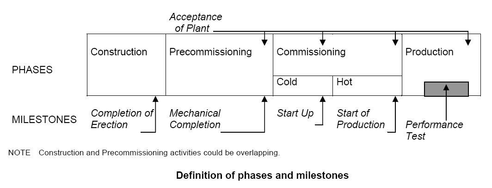
- Factory Acceptance Testing (FAT): Vendor-supplied components undergo formal testing to validate performance against specifications. FAT reports from battery and inverter manufacturers are reviewed, and any deficiency lists generated are addressed before proceeding.
- Hot Commissioning: Once cold commissioning is complete and all safety verifications are confirmed, equipment is energized in controlled sequences. Battery modules undergo gradual charging while voltage, current, and temperature parameters are continuously monitored. Power Conversion Systems (PCS) are tested for AC/DC conversion accuracy.
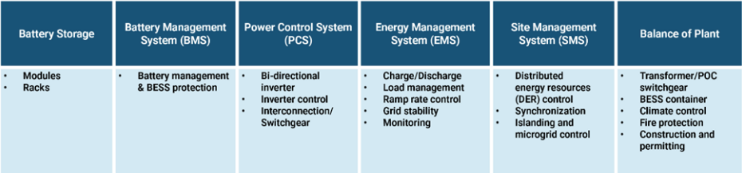
- System Integration Testing: Individual equipment blocks are tested sequentially, then progressively combined until the entire facility operates as an integrated system. This hierarchical approach identifies and resolves interface issues efficiently.
- Performance and Capacity Testing: Comprehensive capacity tests approved by relevant authorities validate that the system operates per specifications. These tests often include controlled discharge cycles, efficiency measurements, and safety system activations.
- Formal Sign-Off and Handover: Upon successful completion of all tests, formal sign-off occurs between equipment suppliers and facility owners, with comprehensive documentation of test results and performance benchmarks.
Phase 6: Pilot Production and Capacity Ramp-Up (1-3 Months and Beyond)
Commissioning completion does not equate to immediate full-capacity operation. Pilot production and gradual ramp-up typically require 1 to 3 months of careful management.
- Initial Production Runs: Small-batch production begins with enhanced quality monitoring and process parameter adjustment. These initial runs validate that real-world production meets design specifications and quality standards.
- Process Stabilization: Manufacturing processes are refined to achieve consistent product quality. Yield rates are optimized through data collection, analysis, and continuous improvement cycles. This stabilization period is critical for long-term operational success.
- Workforce Competency Validation: Operators and technicians demonstrate proficiency in equipment operation, maintenance procedures, safety protocols, and quality control measures through supervised production runs.
- Break-In Period: Equipment undergoes gradual operational cycling to identify any mechanical issues before full-scale deployment. Many manufacturing plants benefit from 2–3 months of controlled operations before attempting maximum throughput.
- Production Scaling: Following successful pilot operations, production gradually increases toward designed capacity. This phased scaling allows process parameters and workforce capabilities to mature progressively.
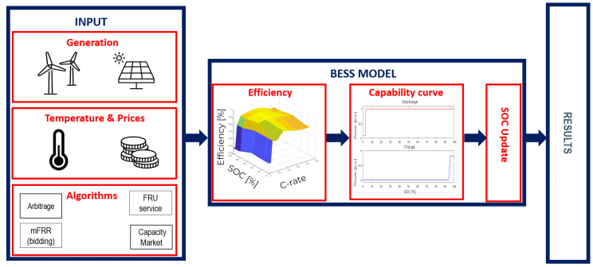
Financial Considerations and Break-Even Analysis
Understanding the financial timeline is crucial for investment decisions. Capital investment requirements vary substantially based on plant scale and technology:
- Battery pack assembly facilities: ₹2–3 crore initial investment
- Lithium cell manufacturing plants: ₹150 crore and above
- Comprehensive giga-scale integrated plants: Multiple hundreds of crores to over a billion rupees
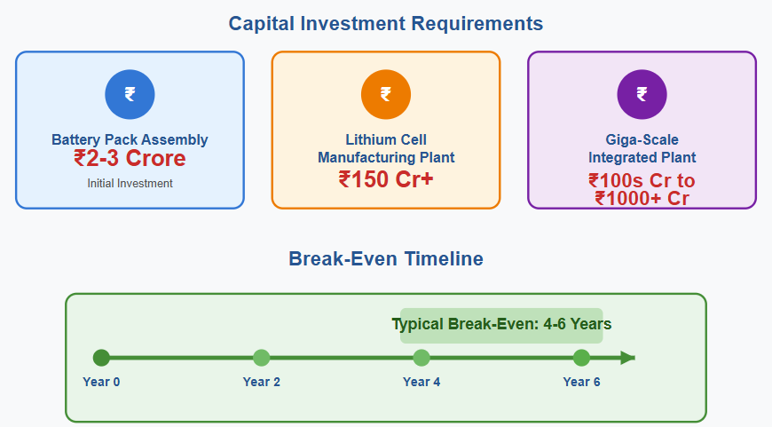
Break-even timelines for BESS manufacturing typically range from 4 to 6 years, depending on production volume, technology costs, energy storage demand, and operational efficiency. This relatively extended payback period reflects the capital-intensive nature of battery manufacturing and the need for sustained production volume to achieve profitability.
Working capital requirements include inventory of raw materials, work-in-process components, and finished goods—typically constituting 5–15% of total facility cost on an annual basis.
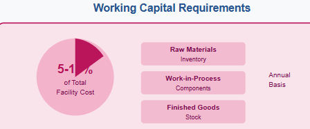
Key Risk Factors and Timeline Extensions
Several factors can extend the baseline 18–24-month timeline:
- Supply Chain Disruptions: Delayed equipment delivery from international suppliers can extend the installation phase by several months. Domestic sourcing of components and early supplier engagement mitigate this risk.
- Regulatory Delays: Unexpected regulatory requirements or appeals in the approval process can add 2–4 months to the timeline. Engaging regulatory authorities early and documenting compliance proactively reduces this risk.
- Construction Complications: Unforeseen soil conditions, weather delays, or design modifications during construction can extend Phase 3 by 2–6 months.
- Technical Challenges in Commissioning: Complex system integration issues can extend commissioning timelines. Parallel commissioning of sub-systems, rather than strictly sequential approaches, helps compress this duration.
- Workforce Availability: Shortage of skilled battery manufacturing technicians can slow equipment setup and commissioning. Pre-hiring and training programs during earlier phases address this constraint.
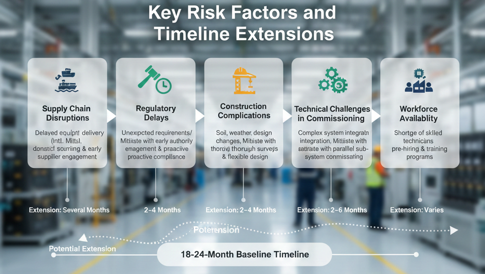
Accelerating the Timeline: Best Practices
Industry leaders employ several strategies to compress the 18–24 month baseline:
- Parallel Phase Execution: Initiating Phase 2 activities (regulatory approvals) while Phase 1 (site selection) is concluding creates timeline overlap. Similarly, beginning equipment procurement during Phase 3 (construction) ensures delivery alignment with installation commencement.
- Digital Simulation and Pre-Commissioning: Plant simulation tools and virtual commissioning of automation logic prior to physical installation validate line layouts and identify bottlenecks before on-site commissioning. This digital dress rehearsal reduces trial-and-error delays significantly.
- Integrated Project Management: Dedicated project management teams with clear accountability, weekly progress tracking, and rapid issue resolution prevent bottlenecks from cascading into extended delays.
- Regulatory Pre-Engagement: Early consultation with pollution control boards, fire safety authorities, and environmental agencies ensures facility design meets all requirements from inception, avoiding costly design modifications post-approval.
- Strategic Partnerships: Collaborating with experienced equipment vendors, construction contractors, and system integrators who have successfully established similar facilities accelerates execution through proven methodologies.
Conclusion
Establishing a BESS manufacturing plant requires 18 to 24 months of coordinated effort across planning, regulatory compliance, infrastructure development, equipment installation, and commissioning phases. While this timeline is achievable with disciplined project management and parallel execution, variations of 6–12 months in either direction are common based on plant complexity, supply chain readiness, regulatory environment, and management effectiveness.